Game developer with a Computer Science background from Charles University — Faculty of Mathematics and Physics (Matfyz), game development track
and 2+ years of professional experience at Flying Rat Studio. Was part of the team that shipped titles on
PS4, PS5, PS VR2, Xbox One, Xbox Series X|S, and Nintendo Switch. Fluent in both Unity/C# and Unreal Engine/C++.
Passionate about creative problem-solving, connecting the virtual and real world, and building
games that are genuinely fun.
Vývojář her s informatickým vzděláním (MFF UK, specializace vývoj počítačových her) a více než
2 lety profesionálních zkušeností ve Flying Rat Studio. Podílel jsem se na vydání her pro
PS4, PS5, PS VR2, Xbox One, Xbox Series X|S a Nintendo Switch. Pracuji v Unity/C# i Unreal Engine/C++.
Zajímám se o kreativní řešení problémů, herní design a tvorbu zážitků, které propojují reálný
a virtuální svět.
Career & Education
Kariéra a vzdělání
present
2025
nyní
2025
Travelling & Independent Development
Cestování a samostatný vývoj
2 months in Sydney, Australia 
·
2 months in Thailand 
— working remotely on
two independent app projects.
2 měsíce v Sydney, Austrálie ·
2 měsíce v Thajsku — práce na
dvou samostatných aplikačních projektech.
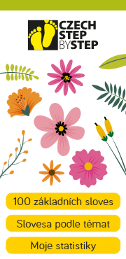
Step by Step App
Flutter · Dart · Claude
Flutter · Dart · Claude
Czech language learning app for foreigners, tied to the successful Step by Step textbook series. Also my experimentation with Claude as a coding assistant. Initial graphic design by Vojtěch Pinc.
Aplikace pro výuku češtiny pro cizince, navázaná na úspěšnou učebnicovou řadu Step by Step. Zároveň mé experimentování s Claudem jako kódovacím asistentem. Počáteční grafický design: Vojtěch Pinc.
FlutterDartClaudeEarly developmentRaná fáze vývoje
The Step by Step textbook series is widely used across Europe for teaching Czech to adult foreigners. The app follows the same curriculum structure, providing audio, vocabulary exercises, and grammar guides alongside the book. Built with Flutter and Dart, using Claude as the primary coding assistant.
Učebnicová řada Step by Step je hojně využívána v Evropě pro výuku češtiny dospělým cizincům. Aplikace kopíruje strukturu učebnice — nabízí audio, slovníčky a gramatiku. Stavěná ve Flutteru a Dartu s Claudem jako hlavním kódovacím asistentem.
▶
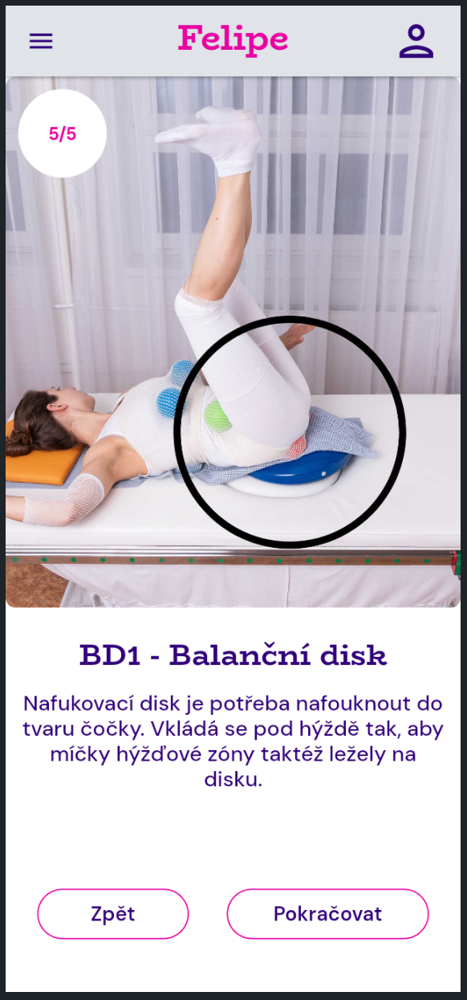
Reflex Locomotion App
Aplikace Reflex Locomotion
Flutter · Dart · FlutterFlow · ETA 2026
Flutter · Dart · FlutterFlow · Dokončení v roce 2026
Medical rehabilitation app for Rehabilitace Karlovy Vary s.r.o., guiding users through the Vojta Method (reflex locomotion therapy). Multi-language support. Built with FlutterFlow for rapid UI development, with full Flutter/Dart export. Design by Vojtěch Pinc.
Rehabilitační aplikace pro Rehabilitace Karlovy Vary s.r.o. zaměřená na Vojtovu metodu reflexní rehabilitace. Vícejazyčná podpora. Stavěná ve FlutterFlow s možností exportu do čistého Flutter projektu. Design: Vojtěch Pinc.
FlutterDartFlutterFlowMedicalPublishing soon
The Vojta Method (reflex locomotion therapy) is a neurophysiological treatment for patients with motor system disorders — cerebral palsy, scoliosis, post-stroke recovery. The app guides both practitioners and patients through the full therapy sequence with visual aids, step-by-step instructions, and multi-language support. Commissioned by Rehabilitace Karlovy Vary s.r.o.
Vojtova metoda reflexní rehabilitace je neurofyziologická léčebná metoda pro pacienty s poruchami motorického systému — mozková obrna, skolióza, rekonvalescence po mrtvici. Aplikace provádí terapeuty i pacienty celou sekvencí cviků s vizuálními pomůckami a vícejazyčnou podporou. Objednáno Rehabilitací Karlovy Vary s.r.o.
▶
2025
2023
Technology-focused studio specialising in console porting, optimisation, and advanced feature development.
Technologicky zaměřené studio specializující se na portaci her na konzole, optimalizace a vývoj pokročilých funkcí.
Internal studio game built in Unreal Engine. Implemented gameplay features in C++ and Blueprints, authored behaviour trees, integrated audio (SFX hooks), and performed general debugging.
Interní projekt studia v Unreal Engine. Implementace herních mechanik v C++ a Blueprintech, tvorba stromů chování (Behaviour Trees), integrace zvukových efektů a ladění chyb.
Unreal EngineC++BlueprintsBehaviour Trees
My first real Unreal Engine project. I worked in both C++ and Blueprints — implementing gameplay systems, authoring behaviour trees for AI, hooking up sound effects at the code level, and performing general debugging across the codebase. The project will be released publicly in the near future.
Můj první skutečný projekt v Unreal Enginu. Pracoval jsem v C++ i Blueprintech — implementace herních systémů, tvorba stromů chování pro AI, napojení zvukových efektů na úrovni kódu a obecné ladění chyb v kódu. Projekt bude v blízké budoucnosti veřejně vydán.
▶
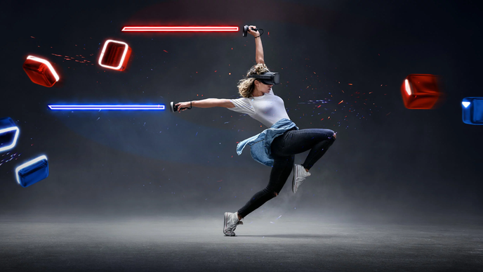
Part of the Flying Rat team responsible for the PS VR2 port of the world's best-selling VR game. Later moved to performance optimisations, tool creation, and general bug fixing across the codebase.
Součást týmu Flying Rat po vydání portu nejpopulárnější VR hry na PS VR2 — výkonnostní profilování, interní nástroje a opravy chyb v kódu.
UnityC#PS VR2Oculus VRInternal toolingOptimisation
Beat Saber is the world's most popular VR game. I was part of the Flying Rat team after they delivered the PS VR2 port — working in platform-specific VR environment, performance profiling, and ensuring the build met Sony's certification requirements, performance optimisations, internal tooling, and general bug fixing across the codebase.
Beat Saber je nejpopulárnější VR hra světa. Připojil jsem se k týmu Flying Rat po vydání portu na PS VR2 — práce v platformně specifickém VR prostředí, profilování výkonu, plnění certifikačních požadavků Sony, optimalizace výkonu, interní nástroje a obecné opravy chyb v kódu.
Trailer ↗
▶

I was part of the team in porting a boomer shooter from DarkPlaces to Unity, targeting PS4, PS5, Xbox One, Xbox Series X|S, and Nintendo Switch. Responsible for gameplay features, UI implementation, and console-specific bug fixing.
Byl jsem součástí týmu portujícího boomer shooter z enginu DarkPlaces do Unity pro PS4, PS5, Xbox One, Xbox Series X|S a Nintendo Switch. Implementace herních a UI funkcí, opravy chyb specifických pro konzole.
UnityC#PS4/PS5XboxNintendo Switch
Wrath was originally built in DarkPlaces — a Quake engine derivative. The port involved reconstructing the game in Unity from scratch, preserving the feel of the original weapons, movement, and enemy behaviour. My work covered implementing gameplay and UI features and fixing platform-specific bugs across console targets, each with their own certification requirements.
Wrath byl původně postaven v DarkPlaces — derivátu Quake enginu. Port zahrnoval rekonstrukci hry v Unity od základů se zachováním pocitu ze zbraní, pohybu a chování nepřátel. Moje práce zahrnovala implementaci herních a UI funkcí a opravy chyb specifických pro konzolových platforem, každou s vlastními certifikačními požadavky.
Trailer ↗
▶
2023
2019
Charles University — Faculty of Mathematics and Physics
Matematicko-fyzikální fakulta Univerzity Karlovy
BSc Computer Science · Game Development track · Unfinished
Bc. Informatika – Vývoj počítačových her · Nedokončeno
Relevant courses:
Výběr absolvovaných předmětů:
Programming 1 (Python)
Programování 1 (Python)
Programming 2 (C#)
Programování 2 (C#)
Programming in C#
Programování v C#
Advanced Programming in C#
Pokročilé programování v C#
Programming in C++
Programování v C++
Advanced Programming in C++
Pokročilé programování v C++
Intro to Game Development (Unity)
Základy vývoje počítačových her (Unity)
Game Mechanics Programming (Godot)
Programování herních mechanik (Godot)
Introduction to Game Design
Úvod do herního designu
Introduction to Computer Graphics
Základy počítačové grafiky
Algorithms & Data Structures 1 & 2
Algoritmy a datové struktury 1 & 2
Practical Game Jam course ×4
Praktikum z vývoje her (Game Jam) ×4
Projects:
Projekty:
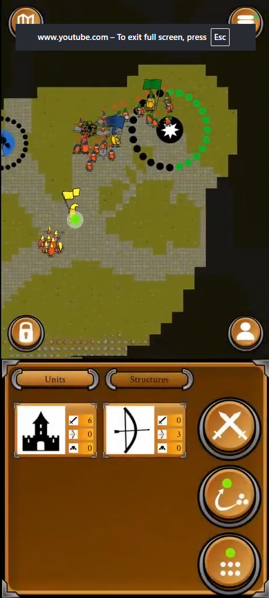
Commander-based RTS played in a real park. The commander's in-game position is linked to the player's GPS location. Designer, project lead, and programmer. Came with a full trailer.
Commander-based RTS hrané v reálném parku — pozice velitele odpovídá GPS souřadnicím. Designer, projektový vedoucí a programátor. Hra má plnohodnotný trailer.
Players first meet in a park, draw the arena boundaries together, then play a simple commander-based RTS where each commander's position is synced to their real GPS coordinates — blending the physical world with the game map. I was responsible for the game design, project leadership, and parts of the programming. The game shipped with a full gameplay trailer.
Hráči se sejdou v parku, společně nakreslí hranice arény a pak hrají commander-based RTS, kde pozice velitele odpovídá skutečným GPS souřadnicím — propojení fyzického světa s herní mapou. Byl jsem zodpovědný za herní design, vedení projektu a část programování. Hra má plnohodnotný trailer i gameplay video.
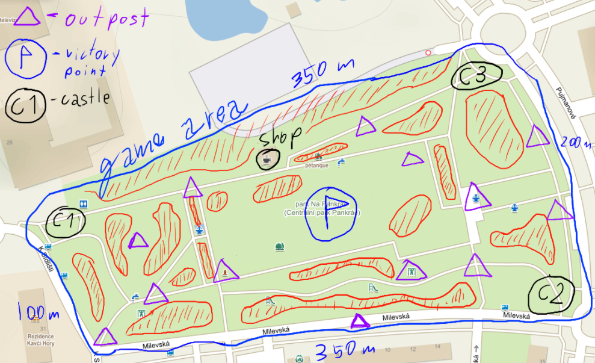
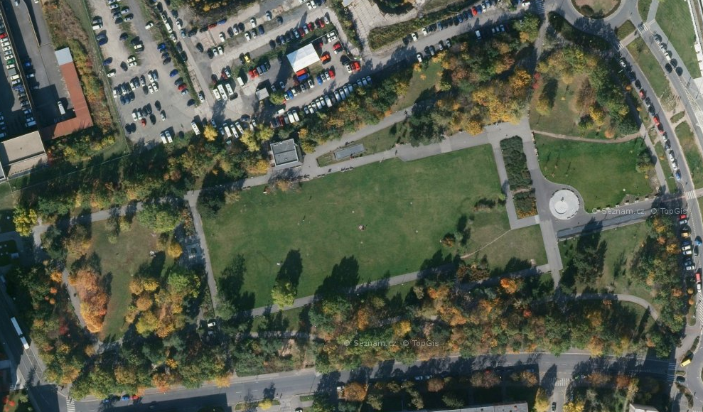
▶
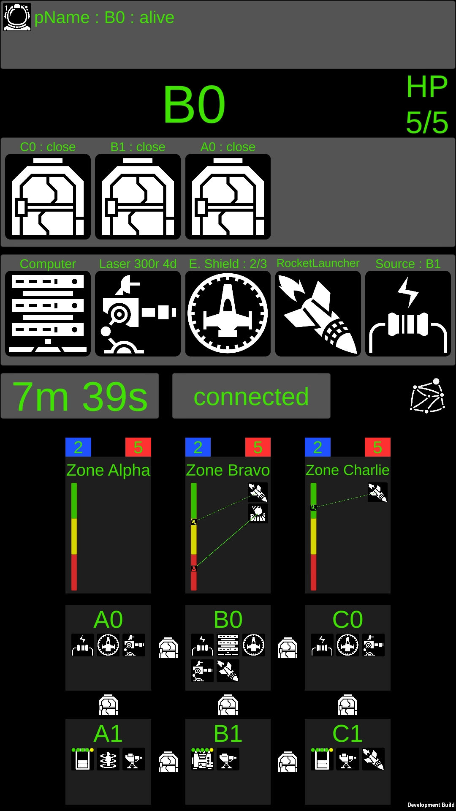
Cooperative LAN mobile game for Android inspired by Space Alert. Players move physically between NFC-tagged rooms to operate a spaceship. Custom NFC–Unity integration documented in a public post.
Kooperativní LAN mobilní hra pro Android inspirovaná Space Alertem. Hráči se fyzicky přesouvají mezi místnostmi s NFC tagy. Vlastní NFC–Unity integrace zdokumentovaná ve veřejném příspěvku.
UnityC#AndroidNFCMultiplayer
This project was intended to be my bachelor's thesis — I finished the game but started working at Flying Rat Studio before completing the write-up. The game is split into 10-minute missions where the ship is attacked by enemies and players must use the spaceship's equipment to survive. Moving between rooms requires scanning a physical NFC tag placed in that room, connecting the real world with the virtual one. Connecting NFC and Unity was unexpectedly complex — I ended up writing a public post documenting exactly how I did it.
Tento projekt měl být mou bakalářskou prací — hru jsem dokončil, ale začal jsem pracovat ve Flying Rat Studio dřív, než jsem stihl napsat text práce. Hra se hraje v 10minutových misích, kde loď napadají nepřátelé a hráči musí pomocí vybavení lodi přežít. Přechod mezi místnostmi vyžaduje naskenování fyzického NFC tagu — propojení reálného světa s virtuálním. Napojení NFC a Unity bylo překvapivě složité, nakonec jsem napsal vlastní příspěvek popisující, jak jsem to udělal.
▶
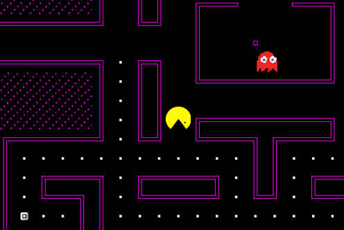
Custom PacMan with progressive difficulty and authentic ghost behaviours. SFML provides only bare-bones rendering, so all animation systems and text rendering were written from scratch. Includes a mouse-driven map editor with auto-connecting pipes.
Vlastní PacMan s narůstající obtížností a autentickým chováním duchů. SFML je velmi základní grafická knihovna, bylo potřeba napsat vlastní animace od základů. Obsahuje editor map s automatickým napojením trubek.
C++SFML
SFML gives you a window and a sprite batcher — nothing else. I had to build a full animation state machine, a bitmap font renderer (with variable-width character support), and a particle system for the death animations all from scratch. The four ghosts each implement the original Pac-Man AI: Blinky directly chases the player, Pinky targets four tiles ahead of the player's direction, Inky uses a combination of Blinky's position and the player to pick an ambush tile, and Clyde alternates between chasing and retreating to his corner. Difficulty increases over time — ghosts speed up and power pellet duration shortens with each level. The map editor draws the maze with mouse drag and auto-connects pipe segments so they always form a closed, valid playfield.
SFML dává jen okno a sprite renderer — nic jiného. Musel jsem od základů napsat animační stavový automat, renderer bitmapového fontu (s podporou různých šířek znaků) a částicový systém pro animace smrti. Čtyři duchové implementují originální Pac-Man AI: Blinky přímo pronásleduje hráče, Pinky míří čtyři dlaždice před hráčem, Inky kombinuje pozici Blinkyho s hráčem pro zálohu, a Clyde střídá pronásledování a ústup do svého rohu. Obtížnost postupně narůstá — duchové se zrychlují a délka trvání power pelletů se zkracuje s každou úrovní. Editor map kreslí bludiště tažením myši a automaticky propojuje segmenty trubek do uzavřeného platného hřiště.
▶


Two versions: a Python console game with adjustable-difficulty AI, then a full C# WinForms version with free-form ship placement and a heatmap-based AI that scores every tile by remaining ship configurations.
Dvě verze: konzolová Python hra s nastavitelnou AI, a C# WinForms verze s libovolnými tvary lodí a heatmap AI, která hodnotí políčka podle zbývajících lodí.
PythonC#WinForms
The heatmap AI maintains a probability grid that updates after every shot. For each unsunk ship it enumerates every position where that ship could still legally fit — horizontally and vertically — given all known hits and misses. Each candidate position adds weight to the tiles it covers. The AI then fires at the tile with the highest accumulated weight. In hunt mode (no active hit streak) this naturally clusters shots around statistically dense areas; once a hit is scored it switches to target mode and the distribution collapses tightly around the wound. Ships in the C# version can be placed in any contiguous non-overlapping shape, not just straight lines — the AI's enumeration handles arbitrary polygons.
Heatmap AI udržuje pravděpodobnostní mřížku, která se aktualizuje po každém výstřelu. Pro každou nepotopenu loď vyjmenovává všechny pozice, kde by loď ještě mohla platně být — horizontálně i vertikálně — s ohledem na všechny známé zásahy a minutí. Každá kandidátní pozice přidává váhu dlaždici, které překrývá. AI pak střílí na dlaždici s nejvyšší naakumulovanou váhou. V režimu hledání se výstřely přirozeně soustředí do statisticky hustých oblastí; po zásahu se přepne do cílového režimu a distribuce se úzce soustředí kolem rány. Lodě v C# verzi lze umístit do libovolného nepřekrývajícího se tvaru, nejen přímky — výčet AI zvládá libovolné polygony.
▶
2019
2011
Gymnázium Joachima Barranda, Beroun · Volunteer at YMCA Braník
High school
Střední škola
Maturita: Mathematics (state & school), Mathematics+, Computer Science, Czech Language
Maturita: Matematika (státní & školní), Matematika+, Informatika, Český jazyk
Volunteer counsellor at YMCA Braník · Lead camp organiser 2022–2023
Dobrovolný vedoucí YMCA Braník · Hlavní vedoucí tábora Pecka 2022–2023
Since age 15 I have volunteered at summer camps and at weekly meetings with youth. I regularly designed and ran small games — something new every Friday. Over the years I also created several larger long-running experiences: two multi-year board game campaigns played round by round at weekly meetings, and a large hex-tile final game for one of our summer camps. In 2022–2023 I served as lead organiser of that same summer camp (YMCA Pecka).
Od 15 let se věnuji práci s dětmi na letních táborech a schůzkách. Pravidelně jsem navrhoval a vedl nové hry — každý pátek něco jiného. Postupem času jsem vytvořil i několik větších celoročních projektů: dvě celoroční deskohry hrané po krocích na schůzkách a velkou závěrečnou hru tábora. V letech 2022–2023 jsem působil jako hlavní vedoucí letního tábora (YMCA Pecka).

Inspired by the 1970s Dune board game. Players harvest spice on contested hexagons while a weekly storm destroys everything in its path. Conflict is central — combat resolved using a system inspired by "878 Vikings", where troops may choose to flee instead of fighting.
Inspirováno deskovou hrou Duna z 70. let. Hráči těží koření na sporných hexagonech. Každý týden se hýbe bouře a ničí vše ve své cestě. Soubojový systém vychází ze hry „878 Vikings" — jednotky mohou místo útoku utéct.
Game DesignHex Strategy
The board is a circular hex map — regions closer to the centre are richer in spice but harder to hold, while the outer ring is safer but poorer. Every Friday the storm advances clockwise by a fixed number of hexes, destroying all spice and all units caught in its path. This created a constant rhythm: harvest fast, move out, watch the storm. Recruitment happened through a simple meeting-points-for-troops economy, which meant every battle was a real investment. The flee mechanic from "878 Vikings" let a losing player salvage part of their army rather than lose everything — which causing many funny and interesting combat scenarios.
Hrací plocha je kruhová hexová mapa — oblasti blíže středu jsou bohatší na koření, ale těžší na udržení, zatímco vnější prstenec je bezpečnější, ale chudší. Každý pátek bouře postoupí po směru hodinových ručiček o pevný počet hexagonů a zničí vše ve své cestě. Vznikl tak stálý rytmus: rychle těžit, přesunout se, sledovat bouři. Nábor probíhal přes jednoduchou ekonomiku body ze schůzek za vojáky, takže každá bitva byla skutečnou investicí. Mechanismus útěku ze hry „878 Vikings" umožnil prohránému hráči zachránit část armády místo ztráty všeho — což vedlo k mnoha vtipným a zajímavým herním situacím.
▶

Civilisation V-style strategy played on a physical wall map. Players earned points at weekly meetings and spent them colonising territory, building cities, raising armies, and collecting rare resource sets. Deliberately designed to create intrigue while keeping direct conflict limited. Ran every Friday for nearly two years.
Strategická hra na nástěnce s mapou z map builderu Civilizace V. Hráči za body ze schůzek budovali města, rozšiřovali území a sbírali kolekce vzácných surovin. Designovaná záměrně tak, aby docházelo ke konfliktům, ale omezeně. Hra běžela každý pátek téměř 2 roky.
Game DesignStrategy
The map was exported from the Civilization V map editor, printed large, and pinned to a corkboard on the wall. Every Friday meeting, players earned a small amount of points just for attending, then spent them on actions: claiming unclaimed land, founding cities, building military units, or buying rare resources. Resources came in several types and were worth points only as complete sets — which pushed the player into choosing between expanding their cities or establishing new ones. Military conquest was intentionally expensive and slow. Over two years the map changed beyond recognition several times.
Mapa byla exportována z editoru map Civilizace V, vytištěna ve velkém formátu a připnuta na korek na stěně. Každý pátek hráči dostali malé množství bodů jen za účast a pak je utráceli za akce: zabírání volné půdy, zakládání měst, budování vojenských jednotek nebo nákup vzácných surovin. Suroviny přinášely body jen jako kompletní sety — což hráče nutilo volit mezi rozšiřováním stávajících měst nebo zakládáním nových. Vojenské dobývání bylo záměrně drahé a pomalé. Za dva roky se mapa několikrát změnila k nepoznání.
▶
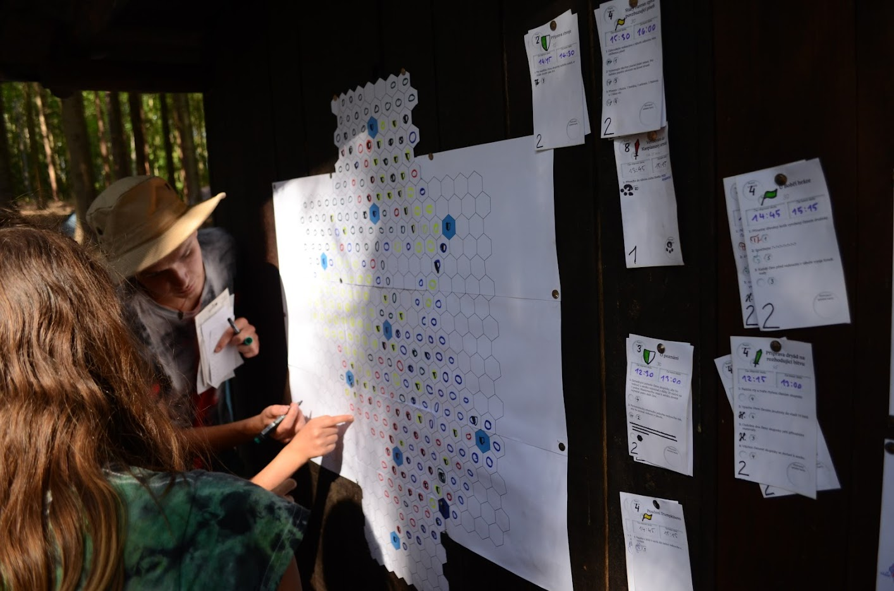
Large-scale hex-tile capture game for a full camp. Teams received time-limited task cards gradually released throughout the day — completing them earned captures, defences, or attacks on the shared map. Scoring rewarded formations and encirclements, forcing real-time prioritisation under time pressure.
Dobývání hexagonů na mapě pomocí úkolových karet s omezenou dobou platnosti. Body za formace a obkličování. Týmy musely v reálném čase prioritizovat úkoly.
Game DesignCo-designed with Vojtěch Pinc & Tadeáš Friedrich
The game ran across the entire camp day. Each team had a faction on a shared hex map and received batches of physical task cards at set intervals — each card had a short physical or knowledge challenge printed on it, a point value, and an expiry time. Completing a card before it expired earned a map action: claim an empty hex, reinforce a border, or attack an adjacent enemy hex. Scoring rewarded contiguous territory, bonus points for encircling an opponent's region entirely. This pushed teams to think several moves ahead and negotiate with neighbours rather than just racing to fill space. We deliberately paused card distribution during lunch — except for one card that read "go eat and rest." The lunch card gave them some points and breathing room to regroup before the last stretch.
Hra probíhala celý táborový den. Každý tým měl frakci na společné hexové mapě a dostával dávky fyzických úkolových karet v pravidelných intervalech — každá karta měla výzvu, bodovou hodnotu a dobu platnosti. Splnění karty před vypršením přineslo akci na mapě: zabrat prázdný hex, posílit hranici nebo zaútočit na sousední nepřátelský hex. Bodování odměňovalo souvislé území a bonusové body za úplné obklíčení soupeřovy oblasti. To tlačilo týmy přemýšlet několik tahů dopředu a vyjednávat se sousedy místo pouhého závodení o prostor. Během oběda jsme záměrně pozastavili vydávání karet — kromě jedné, na které stálo „jdi jíst a odpočívat". Obědová karta jim dala pár bodů a prostor pro oddech a reorganizaci před závěrečným úsekem.
▶
Game Jams — 8 participations
Game Jamy — 8 účastí

Gnome Trouble 🥉 3rd / 50
GDS Prague Game Jam 2024 · Theme: Everything changes
GDS Prague Game Jam 2024 · Téma: Everything changes
2D platformer that switches genre to top-down 3D RPG at the midpoint.
2D plošinovka, která se uprostřed přepne do top-down 3D RPG.
itch.io ↗

∆ntHill
LUDUM Dare 2023 · Theme: Harvest
LUDUM Dare 2023 · Téma: Harvest
Anthill management — deploy scouts and harvesters, upgrade the colony.
Správa mraveniště — posílej průzkumníky a sběrače, rozšiřuj kolonii.
itch.io ↗
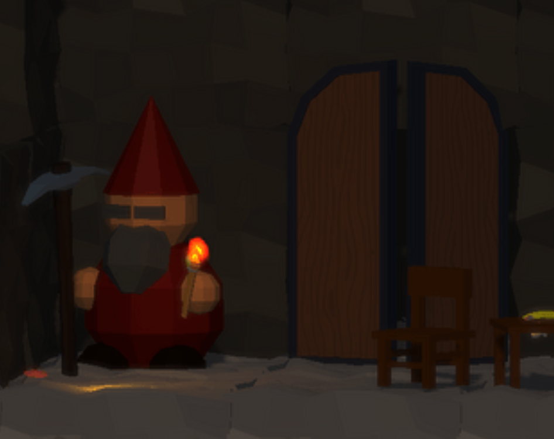
The Dwarves Delved Too Diligently
Spring Game Jam @ Matfyz 2023 · Theme: Devil is in the details
Spring Game Jam @ Matfyz 2023 · Téma: Devil is in the details
Grid mining puzzle — regulations pile up after every level.
Těžební puzzle na mřížce — po každém levelu přibývají nařízení.
itch.io ↗

Clumsy Dwarves
GAMEDEV CUNI JAM 2022 · Theme: YOLO
GAMEDEV CUNI JAM 2022 · Téma: YOLO
First Unity project. Factory comedy — dwarves die from old age, stupidity, or being crushed by boxes.
Mé první Unity. Tovární komedie — trpaslíci umírají stářím, hloupostí nebo přimáčknutím bednou.
itch.io ↗
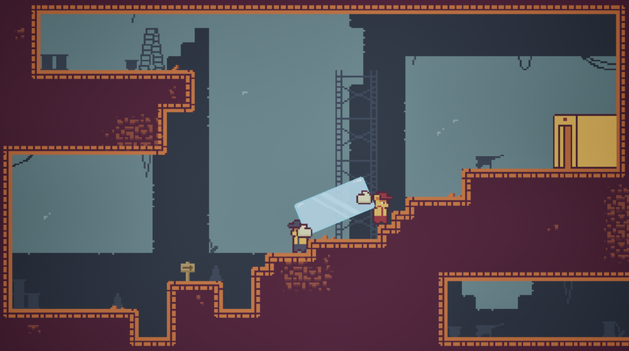
Bear Breakout: 25D Glass Conundrum
FlyingRat GameJam 2024 · Theme: Fragile
FlyingRat GameJam 2024 · Téma: Fragile
Local co-op for 2 — carry a fragile glass panel across the level.
Lokální co-op pro 2 — přeneste skleněný panel přes level bez rozbití.
itch.io ↗

Bold Drive
GDS Prague Game Jam 2025 · Theme: Fortune favours the bold
GDS Prague Game Jam 2025 · Téma: Fortune favours the bold
You're a "Bold" driver (wordplay on Bolt taxis) — drive and chat with passengers.
Jsi řidič „Bold" (slovní hříčka na Bolt) — vezíš zákazníky a cahtuješ s nimi.
itch.io ↗
Letter of Recommendation
I'm happy to recommend Tomáš Plhák, whom I worked with as a Producer/CEO. From the start, Tomáš proved to be a fast learner with a lot of potential. He picked things up quickly, wasn't afraid to ask questions, and consistently showed a genuine interest in improving his skills.
Beyond his work ethic, Tomáš has great social skills and is simply a nice person to be around. He communicates well, works easily with others, and brings a positive, friendly energy to any team. Having him around made collaboration smoother and more enjoyable. Tomáš has a great gift to bring people together both at office and at the conference.
I believe Tomáš would be a great addition to any team, both professionally and personally. I wouldn't hesitate to work with him again and can confidently recommend him for future opportunities.
Matouš Márai
CEO · Flying Rat Studio